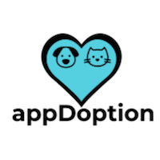
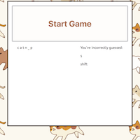
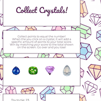
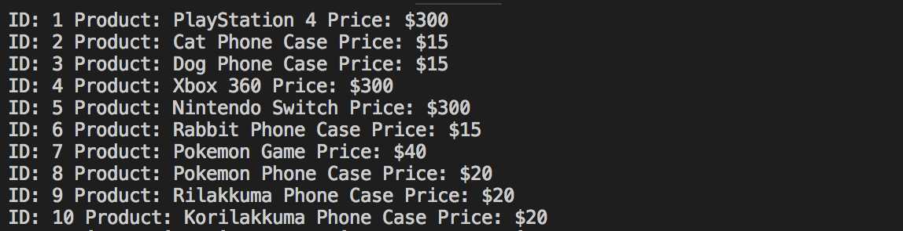

Created as our first group project during bootcamp, appDoption is a web application aimed at delivering an image forwardbrowsing experience for finding adoptable pets in your area. Connected with the api from Petfinder, adoptable cats and dogs are searchable via zipcode search. My primary role on this project was UI design and development.
Created as our second group project during bootcamp, Campaign Query works to compile campaign finance data from the Federal Election Committee and the Center for Responsive Politics and display it in straightforward, interactive charts and graphs. It was born out of the realization that campaign finance data was difficult to navigate through and understand in its default form from the Federal Election Comission.
A simple cat themed hangman game created using JavaScript. This was one of my initial homework assignments and at the time,quite a challenge.
A game similar to blackjack, in which you click crystals to try to reach a certain score to win. This was my first adventure into using jQuery in a homework assignment.
A CLI app meant to mimic Amazon. It references products against a mySQL database using Node.js.
